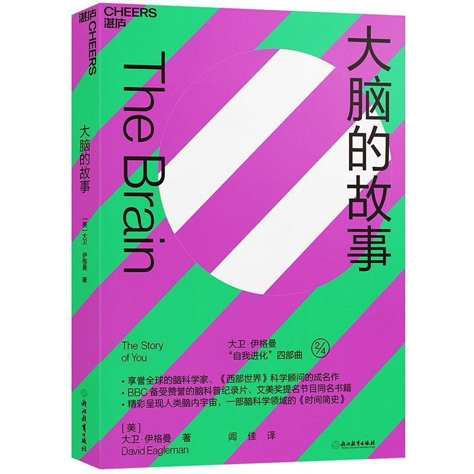
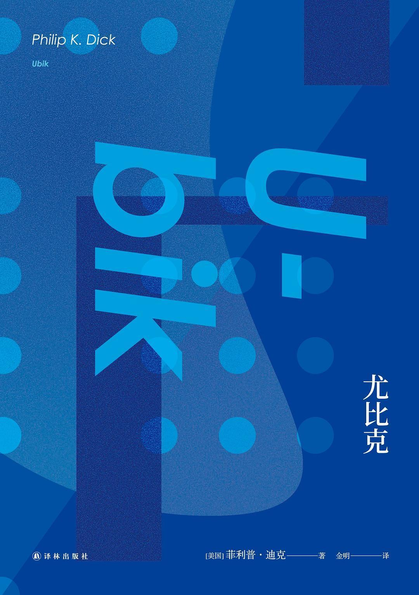
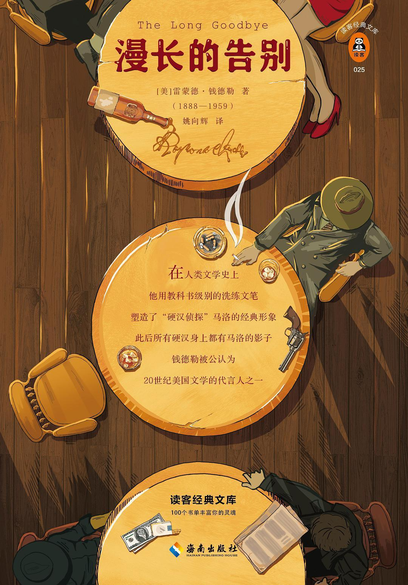
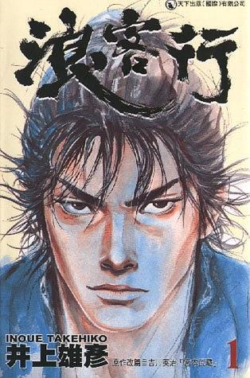
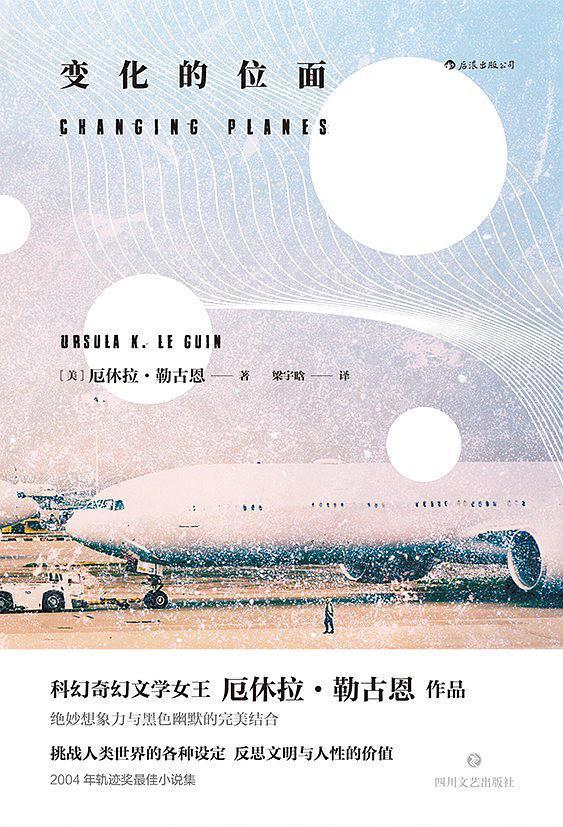

Five stars: highly recommended (in order of recommendation)
- The Astonishing Hypothesis by Francis Crick &
- The Brain: The Story of You by David Eagleman
Category: Broad reading | Neuroscience | Popular science

Review: I put these books together because their content follows a common line, discussing consciousness mainly through vision; even the authors have a teacher–student relationship. The Astonishing Hypothesis, first published in 1994, is by Crick—yes, the DNA one. The title is a little opaque, the terminology plentiful and the information density high. The book's most important keywords: consciousness, vision, neurons, memory, attention, and monkeys. Just kidding about the last one. The models mentioned in the neural network chapter are ancestral: one, ADALINE, dates to 1960. Astonishing. The Brain, first published in 2015, feels a little like the 2010s inheriting from the 1990s, the student from the teacher. Every chapter poses an interesting big question, covering both classics and the frontier, with superb examples, accomplished prose and references at the end. As popular science, this is also a case of the student surpassing the teacher.
Appendix: notes on The Astonishing Hypothesis & notes on The Brain.
- Ubik by Philip K. Dick &
- The Minority Report (story collection) by Philip K. Dick
Category: Fiction | Stories | Science fiction

Review: Many people, myself included, may not know enough about Philip K. Dick, or PKD. But among Blade Runner, Minority Report and The Man in the High Castle, at least one name is likely familiar. At year's end I read five PKD books in succession. Meanwhile, The Man in the High Castle arrived on television, the game Cyberpunk 2077 was about to be released, and there were rumors of a sequel to The Matrix. Add major changes in the real world, and PKD and cyberpunk were everywhere, like the hallucinations in his books. Ubik is a slow burner. After finishing it, all I could do was swear: having endured a dull first half, the second half pulled half of me out of myself. The Minority Report collection is brilliant story after story too. Perhaps because of experiences from drug trips, PKD's fiction favors “self-consciousness,” where oneself is not oneself, and “reality and illusion,” where the world is not the world. His humor and story patterns have something in common with detective novelist Raymond Chandler. If Asimov is the god of science fiction—please don't beat me up, other fans—PKD may be its ghost.
- The Long Goodbye by Raymond Chandler
Category: Fiction | Novel | Detective fiction

Review: I hadn't touched detective or mystery fiction in years, and was happy to find this novel so much to my taste. Chandler's prose deserves godlike status: humorous, melancholy—isn't that an interesting pair of words?—crisp and seasoned. The Chinese translation deserves considerable credit too. I had never taken notes on so many passages of a novel. A short Douban review put it well: the detective novel is only this story's shell. Perhaps good genre fiction is never satisfied with being only genre fiction. “To say goodbye is to die a little.” The atmosphere of farewell permeates the book. This complex feeling may be the most beautiful and lasting thing we take from it.
- Vagabond by Takehiko Inoue
Category: Fiction | Manga

Review: Unquestionably a masterpiece. The art makes me drool. Whether combat, inner thoughts or comedy, its expressive force is tremendous. Many characters are immensely lovable, and the story and ideas it wants to express are interesting. P.S. Are we sure Beiluo's character design in GuJian 3 wasn't influenced by Miyamoto Musashi? And… Kojiro!!! This manga is in the “maybe within my lifetime” category. I don't want it sitting in my “currently reading” list forever, so I marked it read.
- Changing Planes by Ursula K. Le Guin
Category: Fiction | Stories | Science fiction

Review: Recalls Borges, Stories of Your Life and Others, Gulliver's Travels (books), Kino's Journey (anime), and Planescape: Torment (a game). A collection of literary imaginary worlds, almost every one leaving an impression. Some would be fascinating expanded into larger fictional worlds. Ursula's broad knowledge shows through her imagination. The title Changing Planes is a pun, and isn't Planescape the English title of that game? Interesting.
Four stars: recommended (most recent reading first)
- Do Androids Dream of Electric Sheep? Fiction | Novel | Science fiction
Review: The novel wants to express far more complex things than the film. The passages that resonated most with me run from the protagonist entering the theater to establishing the identity of the other bounty hunter, and the peaches and tears in the apartment.
- The Man in the High Castle Fiction | Novel | Science fiction
Review: Different from what I imagined. As science fiction, it has no “fantastical” element; it is very close to, or simply is, literary fiction. It gave me a little of the feeling of reading Cloud Atlas.
- The Big Sleep Fiction | Novel | Detective fiction
Review: As Murakami says, this is messier than The Long Goodbye. But I really do like Chandler's prose. Very seasoned.
- Flow My Tears, the Policeman Said Fiction | Novel | Science fiction
Review: Quite peculiar. Surely you'd need to have taken drugs to write those descriptions of taking drugs? Very literary too; calling it genre fiction may not cover it. This is certainly not a novel satisfied with merely telling a story. And the style really does recall Chandler. Also: I followed the translator on Douban. They must have understood the book inside out for the translation to feel this comfortable.
- Reading in the Brain Broad reading | Neuroscience | Popular science
Review: Given the depth of its subject and the detail of its discussion, this really cannot be called an easy popular science read. Extensive findings from neuroscience and psychology, with excellent illustrations, plus the author's synthesis and conjectures, give it something of an academic discussion. Although most of its content concerns reading, the ultimate purpose is to explore the adaptability/plasticity of the human nervous system. Reading is a very clever starting point: this behavior appeared extremely late and is difficult to explain through evolution. It also represents a major difference between humans and other animals, allowing many cross-species comparisons. Reading involves basic visual and auditory processing—the latter mainly in learning—as well as deeper semantic processing. A substantial rabbit hole. Anyone interested in language, vision or neuroscience should read it. Beneath the complexity, even without getting lost in every detail, there is much to gain. The book was written in 2009. How many important findings must there have been in ten years?
Appendix: notes on the whole book.
- 看海的人 (Those Who Watch the Sea, story collection) Fiction | Stories | Science fiction
Review: Every story is interesting: strange geometries and forces, uneven spacetime, quantum transport, causal ouroboroses, virtualization and cache leaks, assimilation, degeneration and brainwashing… My favorites are “缓存” (“Cache”) and “看海的人” (“Those Who Watch the Sea”).
- The Selfish Gene, 40th-anniversary edition Broad reading | Biology | Popular science
Review: Popular science written at the frontier inevitably has problems, as the repairs and revisions across editions over the years show. That doesn't obscure the book's brilliance. One obvious flaw is that some arguments are too long, particularly the responses to commentary in the penultimate chapter. The meme is what people in my circles most often mention, but the book's discussion of it is actually quite preliminary. The perspective of evolution at the gene level gave me more understanding of natural evolution. It took three weeks to read, with many highlights and thoughts along the way. Rewarding overall.
Appendix: notes.
- Make It Stick Broad reading | Psychology | Popular science
Review: Loosely structured but still valuable. Besides some old friends, there were examples I encountered here for the first time. It complements Learning How to Learn and Peak.
Appendix: notes.
- On Liberty Broad reading | Politics and law
Review: Reading worthwhile books doesn't solve every problem, but at least leaves you with slightly more sophisticated questions. The book's ideas have limitations too. Its principles are oversimplified, for example, as shown by the laborious discussion of practical problems in the last chapter. But its essential insights remain essential. Unfortunately, it is hard to force someone who doesn't want to read into doing so. Even willing readers easily become one-sided through fixed positions. The book says truth comes through the clash of different views, whereas echo chambers are full of echoes. Published in 1859, a full 160 years ago: the world advances painfully slowly in human affairs. The translation barely passes. Reading it at this particular moment, bringing my own observations and thoughts, was still rewarding. I'll put up my notes later.
Appendix: notes.
- 暗时间 (Dark Time, essays) Broad reading | Psychology | Problem solving
Review: Too scattered, although its interests are fascinating and you can see the author has read a lot of cognitive psychology. The Y combinator section thoroughly tangled me up, bringing back the terror of GEB. Fitting for an essay that even models its name after GEB… I'll finish it when I have time. The sorting essay really hit the spot: a sorting problem is actually a search problem. The final essay on Bayes happened to provide material for my article draft too. One star added!
Appendix: notes.
- Hooked Broad reading | Psychology | Design
Review: The Chinese title, “Addicted,” is less good than the original Hooked. Overall, the book is better than expected. Its four steps for forming user habits—internal/external triggers, action, rewards, especially variable ones, and investment—clearly correspond with the four elements of habit in Learning How to Learn. It also mentions several cognitive biases. Many examples suit my taste, including LoL and Stack Overflow, and it briefly touches on gamification. Chapter six's discussion along two dimensions, whether you'd use it yourself and whether it offers users great value, is interesting.
Appendix: notes.
- 学习之道 (Learning How to Learn) Broad reading | Psychology
Review: I finished the online course two weeks ago and have now gone through the book. In between, I started using methods it mentions, including the Pomodoro timer, daily lists and recall. Immensely useful. I need to revisit and try them more in my future learning.
Appendix: notes.
- The Aleph (story collection) Fiction | Stories
Review: Several stories here are rich with flavor. The cascading images in “The Aleph” moved me to tears. Reading it puts my brain completely into diffuse mode: wonderfully relaxing, and somehow a good match with Shafiq's soul album The Loop.
- Mathematics: A Very Short Introduction Broad reading | Mathematics
Review: The chapter titles are some of the most important fundamental concepts in mathematics.
Appendix: notes.
- The Clash of Civilizations and the Remaking of World Order Broad reading | Politics | Foreign affairs
Review: I read the beginning at university and finally read it all this time. It corrected quite a few of my earlier naive ideas about politics and foreign affairs, and changed some of my ideas about religion. I wouldn't say every view in it is correct, but its wealth of factual detail and the unfolding of its arguments allow a slightly deeper understanding of some things. In tone, I think the author is already quite neutral, without an obvious inclination toward any particular civilization or value system. Comparing this book from twenty years ago with major events since—such as the Arab Spring, the US presidential election and the Belt and Road Initiative—and smaller things, including views encountered online and in everyday life, then thinking carefully about them, feels fascinating.
Appendix: notes.
- Remembrance of Earth's Past: The Three-Body Trilogy Fiction | Novels | Science fiction
Review: Finished my third reading, my second of the third book. The last time was six or seven years ago. Its merits outweigh its flaws. This time the first two books felt better than the third. The quality varies between passages, and the prose often doesn't seem to flow.
- 杜撰集 (Artifices, story collection) Fiction | Stories
Review: Writing texts that resemble fiction using methods that don't resemble fiction.
- The Garden of Forking Paths (story collection) Fiction | Stories
Review: On rereading, I liked this less than A Universal History of Infamy, perhaps because it is too metaphysical and too full of metaphor. Its pioneering nature is undeniable, but the skimpy narration gives an impression of not thinking matters through, of laziness. Perhaps this is precisely the impression the author wants to give, being a poet at heart.
- A Universal History of Infamy (story collection) Fiction | Stories
Review: I once couldn't appreciate the outlines and spare descriptions in these histories of infamy; now I can. I quite like Wang Yongnian's translation. Many sentences have a distinctive flavor, most appearing at the stories' ends. For example, “The terrible carriage that had pursued him for years struck him.” [Another passage describes a body found on a busy New York street at dawn, five bullet wounds, and an ordinary cat that survived, prowling beside him in bewilderment.] The stories are concise, forceful and vivid. “The Man on Pink Corner” conceals the first-person narrator's role as the culprit. Two of the five stories in the “Et cetera” section come from The Thousand and One Nights. That last work is a masterpiece; I really want a complete set.
Roundup
Overall, an improvement on last year. Total reading time increased. Although I finished no nonfiction books of intensive study, I did far more broad reading, well beyond the goal at the year's beginning, and produced many thoughts to explore further. I found plenty of good fiction too. For books, I especially recommend WeChat Reading: a comprehensive library, an unlimited card for reading everything free, note exports and social connections. It recently added an app supporting several e-readers. Overall, it beats Kindle, Duokan and Douban hands down.
- 2019 roundup:
- Overall: approximately 149.5 hours, averaging 12.5 hours a month; 42 books, counting one manga series as one book.
- Categories: nonfiction broad reading 21; nonfiction intensive study 0; fiction 21.
- Ratings: five stars/highly recommended 7; four stars/recommended 19; three stars/all right 15; two stars/poor 1.
- Goals reached:
- Total time: 149.5/200.
- Nonfiction intensive study: 0/5.
- Nonfiction broad reading: 21/10.
- 2020 goals:
- Total time: 200 hours.
- Nonfiction intensive study: 5.
- Nonfiction broad reading: 10.
- Book reviews: 2.
Compiled from the books and short reviews I recorded on Douban. Book links and cover images are from Douban; all Douban links on this page are in Chinese. English renderings accompanying untranslated Chinese titles are descriptive. Quoted English sentences here are translated from the Chinese quotations.